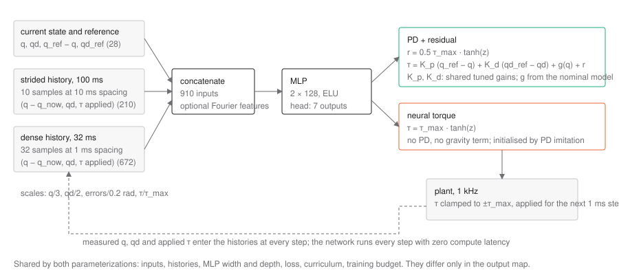
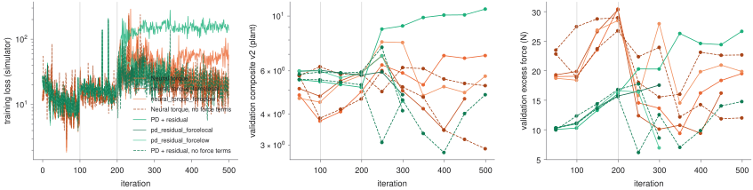

With the simulator itself as the training medium (finite-difference gradients through MuJoCo, ADR 0005), zero compute latency at 1 kHz, a broad joint-space training distribution, per-window robot instances and payloads, and references that deliberately cannot be tracked: do PD + residual and neural torque learn to track position targets in free space and to yield when a target lies inside a surface, using only proprioception and its history? Two secondary questions set by the advisor: is an explicit contact-force term in the loss needed for compliance, or does the network learn to exert lower force implicitly (controlled ablation with and without the force terms); and does the hidden representation carry the contact state (linear probe), i.e. is the compliance a learned mode detection rather than a globally softer controller?
Erratum 2 (2026-11-16, blocked family). The blocked-reference generator tested 'inside the surface' with the wrong sign for the table surface (60% of the blocked references, ADR 0007): those references had empty blocked and release phases, so their training windows in reports D2 to D4 contained no block at all (they started at the end of the reference), and their recovery metric was undefined and counted as zero in the composite. The generator is fixed, the reference pools were rebuilt and the test tables of this report were regenerated from the corrected cases. The tables of this report still show the numbers from before the fix (only the blocked family is affected); they are regenerated after the contact deep dive D5, which evaluates these arms again.
Erratum 3 (2026-11-16, wall surface). In the wall branch of the blocked and contact families the tool pointed 50 to 70 degrees below horizontal with targets up to 8 cm inside the wall, so the hand and the forearm reached the wall before the tool: link contact during 65 to 85% of the blocked phase, and in three of seven wall validation cases the tool never touched the wall. Those cases measured unsensed link collisions. The generators now tilt the tool 30 to 45 degrees, place wall targets 3 to 6 cm deep and reject any reference whose deepest pose brings a link within 2 cm of the wall (ADR 0007); PD rollouts confirm tool contact for 93 to 98% of the blocked phase and no link contact. The tables of this report are regenerated from the corrected cases after the contact deep dive D5.
The numbers in this report were first produced (2026-11-15) by an evaluation harness that simulated the nominal robot for every case, ignoring the case's instance and payload (ADR 0005, erratum of 2026-11-16). The learned controllers had been trained with payloads of 0 to 3 kg and were evaluated without any, which contributed to their position bias in hold and free motion. The tables, figures and clips below were regenerated with the corrected harness (each case on its own instance, payload and sensor noise); checkpoints remain those selected by the nominal-plant validation during training. The superseded numbers are kept in runs/d2/metrics_test_nominal_plant.json.
Controllers run at 1 kHz with zero compute latency: the simulation is paused while the network evaluates, and the torque is applied for the next 1 ms step (ADR 0005). The PD baseline is the protocol v2 shared gain set of report D1. Learned controllers are trained by backpropagation through time through MuJoCo (forward-difference transition derivatives, 2 s windows, truncation every 250 steps, batch 24, Adam, gradient clipping at norm 1) on the protocol v2 training families with a three-stage curriculum (hold/free/policy; plus steps; plus contact and blocked references), each window on a freshly sampled robot instance with a payload between 0 and 3 kg and 10 N disturbance pulses in 30% of the hold and free windows. Checkpoints are selected on 14 validation cases in the plant. Evaluation: protocol v2 test families on 8 fixed instances, plus held-out workspace, speeds, payload and instance deviations; 16 cases per family in distribution, 8 per family in the held-out groups.
Both learned controllers share one network and differ only in how its output becomes a torque. The input is the current measured state and reference (position, velocity, position error and reference velocity, 28 numbers) and a two-scale proprioceptive history at 1 kHz: 10 samples at 10 ms spacing covering 100 ms, and the last 32 samples at 1 ms spacing, each sample holding the position relative to the current one, the velocity and the torque applied at that step (42 samples of 21 numbers). All inputs are scaled by fixed constants (positions by 3 rad, velocities by 2 rad/s, errors by 0.2 rad, torques by the actuator limits); no statistics are fitted to data. The network is a multilayer perceptron with two hidden layers of 128 ELU units and a linear head of 7 outputs, 150 thousand parameters. For PD + residual the head is squashed to half the torque limits and added to the shared PD plus nominal gravity compensation; for neural torque the head is squashed to the full torque limits and is the torque. The neural-torque network is initialised by imitating the hand-set initial PD of Milestone 1 on closed-loop free-space states (disclosed; it gives the network no information the PD baseline lacks). The optional Fourier-feature encoding of the representation study appends sines and cosines of 64 random projections of the raw input.

One line per run; the no-force ablations are dashed. Validation uses 14 fixed protocol v2 cases in the plant with their own instances and payloads.

One case per family (median composite of the protocol v2 PD); all controllers track the identical reference; contact families also at quarter speed.
Whether the controller's hidden representation separates contact from free motion better than the raw observation does, and how early it does so around contact onset.
| Controller | Balanced accuracy, hidden layer | Balanced accuracy, raw observation | Onset detection lead (ms), hidden | Onset detection lead (ms), raw | Test samples | Contact fraction |
|---|---|---|---|---|---|---|
| Neural torque | 0.83 | 0.857 | -1.66e+03 | -1.66e+03 | 14776 | 0.35 |
| Neural torque, no force terms | 0.779 | 0.802 | -1.68e+03 | -1.58e+03 | 14776 | 0.32 |
| PD + residual | 0.785 | 0.798 | -1.52e+03 | -1.64e+03 | 14776 | 0.25 |
| PD + residual, no force terms | 0.854 | 0.847 | -435 | -1.51e+03 | 14776 | 0.37 |
Seed 0 of every arm; checkpoints selected on the plant validation cases (nominal robot, see the erratum). The two force-term arms used the first-pass loss weights (0.5 on excess force above 30 N, 0.02 on force rate); the no-force arms set both to zero; everything else is identical. All test numbers from the corrected harness. The follow-up arms announced in the first version (force terms at one tenth, second seeds, local force gradient) were stopped when the gradient plan of report D3 superseded this objective.
| Group | Controller | Composite v2 | Composite (15 N cap) | Excess force above 30 N (N) | Excess force above 15 N (N) | Peak force (N) | Sustained peak, 20 ms (N) | Position RMSE (rad) | Diverged |
|---|---|---|---|---|---|---|---|---|---|
| In-distribution families | PD, shared gains | 4.29 | 5.95 | 6.53 | 10.4 | 142 | 81.3 | 0.0314 | 0 |
| In-distribution families | PD + residual | 4.06 | 6.55 | 13.8 | 17.9 | 140 | 88.9 | 0.0204 | 0 |
| In-distribution families | Neural torque | 7.53 | 14.5 | 47.4 | 53.8 | 213 | 189 | 0.0262 | 0 |
| In-distribution families | PD + residual, no force terms | 5.55 | 9.13 | 20.7 | 25.6 | 161 | 116 | 0.0266 | 0 |
| In-distribution families | Neural torque, no force terms | 7.42 | 14.2 | 46.2 | 51.9 | 195 | 185 | 0.0231 | 0 |
| Held-out workspace (base yaw 1.2 to 2.6 rad) | PD, shared gains | 1.62 | 1.62 | 0 | 0 | — | — | 0.0417 | 0 |
| Held-out workspace (base yaw 1.2 to 2.6 rad) | PD + residual | 1.14 | 1.14 | 0 | 0 | — | — | 0.0263 | 0 |
| Held-out workspace (base yaw 1.2 to 2.6 rad) | Neural torque | 1.12 | 1.12 | 0 | 0 | — | — | 0.0274 | 0 |
| Held-out workspace (base yaw 1.2 to 2.6 rad) | PD + residual, no force terms | 1.32 | 1.32 | 0 | 0 | — | — | 0.0307 | 0 |
| Held-out workspace (base yaw 1.2 to 2.6 rad) | Neural torque, no force terms | 1.07 | 1.07 | 0 | 0 | — | — | 0.0248 | 0 |
| Speed x1.5 | PD, shared gains | 4.33 | 5.41 | 3.4 | 6.91 | 296 | 132 | 0.0356 | 0 |
| Speed x1.5 | PD + residual | 3.44 | 4.4 | 3.46 | 6.63 | 290 | 119 | 0.0228 | 0 |
| Speed x1.5 | Neural torque | 6.18 | 11 | 31.2 | 38.6 | 286 | 166 | 0.0319 | 0 |
| Speed x1.5 | PD + residual, no force terms | 4.39 | 6.21 | 8.23 | 13.3 | 303 | 134 | 0.0266 | 0 |
| Speed x1.5 | Neural torque, no force terms | 4.73 | 8.45 | 20.7 | 26.6 | 196 | 136 | 0.0294 | 0 |
| Speed x2 | PD, shared gains | 4.77 | 5.81 | 4.19 | 7.54 | 358 | 150 | 0.0416 | 0 |
| Speed x2 | PD + residual | 4.27 | 5.13 | 4.32 | 7.46 | 354 | 139 | 0.0301 | 0 |
| Speed x2 | Neural torque | 6.57 | 11.1 | 29.2 | 36.7 | 343 | 179 | 0.0394 | 0 |
| Speed x2 | PD + residual, no force terms | 4.88 | 6.32 | 7.64 | 11.9 | 384 | 157 | 0.0334 | 0 |
| Speed x2 | Neural torque, no force terms | 4.49 | 7.63 | 15.8 | 21.5 | 207 | 129 | 0.035 | 0 |
| Payload 3 kg | PD, shared gains | 9.9 | 13.6 | 19 | 27.3 | 235 | 120 | 0.0565 | 0 |
| Payload 3 kg | PD + residual | 6 | 10.8 | 22.8 | 32.7 | 186 | 110 | 0.0172 | 0 |
| Payload 3 kg | Neural torque | 11.6 | 23 | 73.7 | 84.7 | 219 | 186 | 0.0254 | 0 |
| Payload 3 kg | PD + residual, no force terms | 10.4 | 17.7 | 44.4 | 54.1 | 226 | 147 | 0.0313 | 0 |
| Payload 3 kg | Neural torque, no force terms | 12.3 | 24 | 77.1 | 87.6 | 211 | 191 | 0.0218 | 0 |
| Held-out robot instances (doubled deviations) | PD, shared gains | 4.48 | 6.34 | 6.78 | 11.7 | 165 | 93.1 | 0.0348 | 0 |
| Held-out robot instances (doubled deviations) | PD + residual | 5.27 | 8.88 | 19.9 | 25.7 | 192 | 120 | 0.0234 | 0 |
| Held-out robot instances (doubled deviations) | Neural torque | 9.88 | 19.3 | 64 | 71.4 | 261 | 221 | 0.0303 | 0 |
| Held-out robot instances (doubled deviations) | PD + residual, no force terms | 6.12 | 10.2 | 23.7 | 29.8 | 217 | 133 | 0.0267 | 0 |
| Held-out robot instances (doubled deviations) | Neural torque, no force terms | 9.67 | 18.9 | 63.1 | 69.7 | 226 | 206 | 0.0269 | 0 |
Sixteen cases per family on the 8 instances with payloads of 0, 1 or 2 kg. The reference PD is the protocol v2 shared set; the v1 set is the accurate but non-compliant end of the first pass.
| Regime | Metric | PD, shared gains | PD + residual | Neural torque | PD + residual, no force terms | Neural torque, no force terms |
|---|---|---|---|---|---|---|
| Hold | Position RMSE (rad) | 0.0167 | 0.00478 (-0.012*) | 0.00501 (-0.012*) | 0.00998 (-0.0067*) | 0.00338 (-0.013*) |
| Hold | Peak deflection under 10 N pulse (m) | 0.016 | 0.00885 (-0.0071*) | 0.00351 (-0.012*) | 0.0133 (-0.0027*) | 0.00527 (-0.011*) |
| Hold | Torque rate RMS (Nm/s) | 48.7 | 84.5 (36*) | 122 (73*) | 48.4 (-0.35) | 101 (52*) |
| Free joint-space motion | Position RMSE (rad) | 0.0191 | 0.0142 (-0.0049*) | 0.0142 (-0.0049*) | 0.0162 (-0.0029) | 0.0119 (-0.0072*) |
| Free joint-space motion | Torque rate RMS (Nm/s) | 52.9 | 56.2 (3.3) | 92.2 (39*) | 50.7 (-2.2) | 120 (67*) |
| Policy-like targets | Position RMSE (rad) | 0.0553 | 0.0357 (-0.02*) | 0.0424 (-0.013*) | 0.0391 (-0.016*) | 0.0412 (-0.014*) |
| Policy-like targets | Torque rate RMS (Nm/s) | 1.77e+03 | 1.88e+03 (1.1e+02*) | 1.54e+03 (-2.2e+02*) | 1.89e+03 (1.3e+02*) | 1.75e+03 (-19) |
| Step targets | Position RMSE (rad) | 0.0444 | 0.0348 (-0.0096*) | 0.0368 (-0.0076*) | 0.0372 (-0.0072*) | 0.0343 (-0.01*) |
| Step targets | Settling time after step (s) | 0.663 | 0.438 (-0.23*) | 0.353 (-0.31*) | 0.649 (-0.014) | 0.267 (-0.4*) |
| Step targets | Step overshoot (-) | 0.0176 | 0.063 (0.045*) | 0.082 (0.064*) | 0.0504 (0.033*) | 0.0629 (0.045*) |
| Contact (tilt, depth, slide) | Excess contact force above 30 N (mean while in contact) (N) | 8.95 | 17.7 (8.8) | 93.4 (84*) | 22 (13*) | 79.5 (71*) |
| Contact (tilt, depth, slide) | Excess contact force above the 15 N cap (mean while in contact) (N) | 16.1 | 26.6 (10*) | 108 (92*) | 31.3 (15*) | 91.7 (76*) |
| Contact (tilt, depth, slide) | Peak normal force (N) | 169 | 220 (50*) | 277 (1.1e+02*) | 223 (54*) | 211 (42) |
| Contact (tilt, depth, slide) | Peak of the 20 ms low-pass filtered normal force (sustained force) (N) | 88.8 | 114 (25*) | 214 (1.3e+02*) | 114 (25*) | 182 (94*) |
| Contact (tilt, depth, slide) | Feasible-direction tool error (m) | 0.0403 | 0.0242 (-0.016*) | 0.031 (-0.0093) | 0.0376 (-0.0027) | 0.0317 (-0.0086) |
| Contact (tilt, depth, slide) | Press-phase force deficit below 5 N (N) | 1.39 | 0.261 (-1.1*) | 0 (-1.4*) | 0.0122 (-1.4*) | 0.269 (-1.1*) |
| Contact (tilt, depth, slide) | Contact losses of 5 ms or more during contact phase (-) | 9.5 | 10.8 (1.3) | 1.88 (-7.6) | 19.7 (10*) | 4.38 (-5.1) |
| Contact (tilt, depth, slide) | Contact losses of 5 ms or more per second of press phase (1/s) | 4.33 | 4.81 (0.48) | 1.13 (-3.2) | 9.42 (5.1*) | 2.38 (-2) |
| Blocked reference | Excess contact force above 30 N (mean while in contact) (N) | 32.7 | 74.4 (42*) | 186 (1.5e+02*) | 95.1 (62*) | 196 (1.6e+02*) |
| Blocked reference | Excess contact force above the 15 N cap (mean while in contact) (N) | 45.6 | 88.9 (43*) | 201 (1.6e+02*) | 110 (64*) | 211 (1.7e+02*) |
| Blocked reference | Peak normal force (N) | 134 | 152 (18) | 255 (1.2e+02*) | 174 (40*) | 260 (1.3e+02*) |
| Blocked reference | Peak of the 20 ms low-pass filtered normal force (sustained force) (N) | 90.4 | 128 (38*) | 250 (1.6e+02*) | 153 (62*) | 258 (1.7e+02*) |
| Blocked reference | Feasible-direction tool error (m) | 0.0376 | 0.0222 (-0.015*) | 0.0139 (-0.024*) | 0.0256 (-0.012*) | 0.0152 (-0.022*) |
| Blocked reference | Recovery after a blocked reference returns (s) | 0.367 | 0.501 (0.13) | 0.197 (-0.17) | 0.565 (0.2) | 0.101 (-0.27) |
| Blocked reference | Apparent stiffness: mean normal force per metre of reference depth while blocked (after the first 0.3 s of contact) (N/m) | 1.18e+03 | 2.26e+03 (1.1e+03*) | 4.86e+03 (3.7e+03*) | 2.63e+03 (1.4e+03*) | 4.99e+03 (3.8e+03*) |
| Task sequence | Excess contact force above 30 N (mean while in contact) (N) | 3.86 | 0.718 (-3.1*) | 44.5 (41*) | 27.1 (23*) | 44.8 (41*) |
| Task sequence | Excess contact force above the 15 N cap (mean while in contact) (N) | 10.7 | 5.03 (-5.7*) | 59.1 (48*) | 37.8 (27*) | 56.3 (46*) |
| Task sequence | Peak normal force (N) | 123 | 48 (-75*) | 107 (-16) | 84.7 (-38*) | 115 (-7.5) |
| Task sequence | Peak of the 20 ms low-pass filtered normal force (sustained force) (N) | 64.7 | 24.2 (-40*) | 103 (38*) | 80.2 (16*) | 114 (50*) |
| Task sequence | Feasible-direction tool error (m) | 0.0241 | 0.0104 (-0.014*) | 0.00964 (-0.014*) | 0.0212 (-0.0029) | 0.0155 (-0.0086*) |
| Task sequence | Press-phase force deficit below 5 N (N) | 0.244 | 1.42 (1.2*) | 0 (-0.24) | 0 (-0.24) | 0 (-0.24) |
| Task sequence | Contact losses of 5 ms or more per second of press phase (1/s) | 11.7 | 9.19 (-2.5) | 0.669 (-11*) | 6.06 (-5.6*) | 3.43 (-8.2*) |
| Regime | Metric | PD, shared gains | PD + residual | Neural torque | PD + residual, no force terms | Neural torque, no force terms |
|---|---|---|---|---|---|---|
| Free joint-space motion | Position RMSE (rad) | 0.0263 | 0.0134 (-0.013*) | 0.0135 (-0.013*) | 0.019 (-0.0072*) | 0.0109 (-0.015*) |
| Free joint-space motion | Torque rate RMS (Nm/s) | 54.7 | 54.3 (-0.43) | 108 (54*) | 50.9 (-3.8) | 113 (58*) |
| Policy-like targets | Position RMSE (rad) | 0.0572 | 0.0391 (-0.018*) | 0.0413 (-0.016*) | 0.0423 (-0.015*) | 0.0388 (-0.018*) |
| Policy-like targets | Torque rate RMS (Nm/s) | 1.82e+03 | 1.94e+03 (1.3e+02*) | 1.56e+03 (-2.5e+02*) | 1.96e+03 (1.4e+02*) | 1.79e+03 (-32) |
| Regime | Metric | PD, shared gains | PD + residual | Neural torque | PD + residual, no force terms | Neural torque, no force terms |
|---|---|---|---|---|---|---|
| Free joint-space motion | Position RMSE (rad) | 0.0248 | 0.0212 (-0.0036) | 0.0225 (-0.0023) | 0.0231 (-0.0017) | 0.0174 (-0.0074*) |
| Free joint-space motion | Torque rate RMS (Nm/s) | 63.4 | 75.8 (12*) | 118 (55*) | 73.8 (10*) | 120 (57*) |
| Policy-like targets | Position RMSE (rad) | 0.0777 | 0.0472 (-0.03*) | 0.0767 (-0.00098) | 0.0532 (-0.025*) | 0.0787 (0.001) |
| Policy-like targets | Torque rate RMS (Nm/s) | 1.95e+03 | 2.05e+03 (1e+02*) | 1.63e+03 (-3.2e+02*) | 2.07e+03 (1.2e+02*) | 1.83e+03 (-1.1e+02) |
| Contact (tilt, depth, slide) | Excess contact force above 30 N (mean while in contact) (N) | 8.14 | 12.4 (4.3*) | 81.1 (73*) | 12.2 (4.1) | 52.1 (44*) |
| Contact (tilt, depth, slide) | Excess contact force above the 15 N cap (mean while in contact) (N) | 14.5 | 21.2 (6.7) | 96.1 (82*) | 21.6 (7.1*) | 64.1 (50*) |
| Contact (tilt, depth, slide) | Peak normal force (N) | 295 | 486 (1.9e+02*) | 466 (1.7e+02*) | 443 (1.5e+02*) | 275 (-20) |
| Contact (tilt, depth, slide) | Peak of the 20 ms low-pass filtered normal force (sustained force) (N) | 136 | 194 (58) | 230 (94*) | 182 (46*) | 163 (27) |
| Contact (tilt, depth, slide) | Feasible-direction tool error (m) | 0.0299 | 0.0172 (-0.013*) | 0.0181 (-0.012) | 0.0283 (-0.0016) | 0.0221 (-0.0078) |
| Contact (tilt, depth, slide) | Press-phase force deficit below 5 N (N) | 1.1 | 0.397 (-0.71) | 0 (-1.1*) | 0 (-1.1) | 0.449 (-0.65) |
| Contact (tilt, depth, slide) | Contact losses of 5 ms or more during contact phase (-) | 17.9 | 16.6 (-1.2) | 4.25 (-14*) | 14.4 (-3.5) | 4.88 (-13*) |
| Contact (tilt, depth, slide) | Contact losses of 5 ms or more per second of press phase (1/s) | 10.7 | 9.21 (-1.5) | 3.09 (-7.7*) | 9.01 (-1.7) | 3.56 (-7.2*) |
| Task sequence | Excess contact force above 30 N (mean while in contact) (N) | 5.47 | 1.43 (-4*) | 43.6 (38*) | 20.7 (15*) | 30.6 (25*) |
| Task sequence | Excess contact force above the 15 N cap (mean while in contact) (N) | 13.1 | 5.34 (-7.8*) | 58.5 (45*) | 31.5 (18*) | 42.2 (29*) |
| Task sequence | Peak normal force (N) | 298 | 93.9 (-2e+02*) | 106 (-1.9e+02*) | 163 (-1.3e+02*) | 117 (-1.8e+02*) |
| Task sequence | Peak of the 20 ms low-pass filtered normal force (sustained force) (N) | 129 | 44.4 (-85*) | 102 (-28) | 86.7 (-42*) | 109 (-20) |
| Task sequence | Feasible-direction tool error (m) | 0.0267 | 0.0119 (-0.015*) | 0.0103 (-0.016*) | 0.0181 (-0.0086*) | 0.00896 (-0.018*) |
| Task sequence | Press-phase force deficit below 5 N (N) | 0 | 0.834 (0.83) | 0 (0) | 0 (0) | 0 (0) |
| Task sequence | Contact losses of 5 ms or more per second of press phase (1/s) | 14.3 | 18 (3.6) | 0.305 (-14*) | 11.8 (-2.6) | 5.87 (-8.5*) |
| Regime | Metric | PD, shared gains | PD + residual | Neural torque | PD + residual, no force terms | Neural torque, no force terms |
|---|---|---|---|---|---|---|
| Free joint-space motion | Position RMSE (rad) | 0.0326 | 0.0286 (-0.004*) | 0.0364 (0.0038) | 0.031 (-0.0016) | 0.0264 (-0.0062*) |
| Free joint-space motion | Torque rate RMS (Nm/s) | 92.6 | 136 (43*) | 201 (1.1e+02*) | 123 (31*) | 183 (90*) |
| Policy-like targets | Position RMSE (rad) | 0.0975 | 0.0681 (-0.029*) | 0.0929 (-0.0046) | 0.0738 (-0.024*) | 0.0925 (-0.005) |
| Policy-like targets | Torque rate RMS (Nm/s) | 1.99e+03 | 2.08e+03 (87*) | 1.62e+03 (-3.7e+02*) | 2.09e+03 (1e+02*) | 1.84e+03 (-1.5e+02) |
| Contact (tilt, depth, slide) | Excess contact force above 30 N (mean while in contact) (N) | 9.4 | 13.2 (3.8*) | 70.6 (61*) | 12.3 (2.9) | 35.1 (26*) |
| Contact (tilt, depth, slide) | Excess contact force above the 15 N cap (mean while in contact) (N) | 16.3 | 20.6 (4.3) | 85.5 (69*) | 21.5 (5.1) | 47.3 (31*) |
| Contact (tilt, depth, slide) | Peak normal force (N) | 356 | 534 (1.8e+02*) | 512 (1.6e+02*) | 511 (1.6e+02*) | 293 (-63) |
| Contact (tilt, depth, slide) | Peak of the 20 ms low-pass filtered normal force (sustained force) (N) | 161 | 204 (43) | 236 (74*) | 205 (44*) | 152 (-9.2) |
| Contact (tilt, depth, slide) | Feasible-direction tool error (m) | 0.0245 | 0.0165 (-0.008) | 0.0177 (-0.0068) | 0.0253 (0.00084) | 0.0202 (-0.0042) |
| Contact (tilt, depth, slide) | Press-phase force deficit below 5 N (N) | 0.511 | 0.447 (-0.065) | 0 (-0.51) | 0 (-0.51) | 0.449 (-0.062) |
| Contact (tilt, depth, slide) | Contact losses of 5 ms or more during contact phase (-) | 24.8 | 23 (-1.8) | 2 (-23*) | 12.8 (-12*) | 4.75 (-20*) |
| Contact (tilt, depth, slide) | Contact losses of 5 ms or more per second of press phase (1/s) | 16.6 | 14.5 (-2.2) | 1.58 (-15*) | 8.95 (-7.7*) | 3.7 (-13*) |
| Task sequence | Excess contact force above 30 N (mean while in contact) (N) | 7.35 | 4.12 (-3.2) | 46.4 (39*) | 18.2 (11*) | 28 (21*) |
| Task sequence | Excess contact force above the 15 N cap (mean while in contact) (N) | 13.8 | 9.25 (-4.6) | 61.3 (47*) | 26.3 (12*) | 38.9 (25*) |
| Task sequence | Peak normal force (N) | 360 | 174 (-1.9e+02*) | 174 (-1.9e+02*) | 257 (-1e+02) | 121 (-2.4e+02*) |
| Task sequence | Peak of the 20 ms low-pass filtered normal force (sustained force) (N) | 138 | 73.6 (-64*) | 122 (-16) | 109 (-29) | 105 (-33) |
| Task sequence | Feasible-direction tool error (m) | 0.0246 | 0.0159 (-0.0086) | 0.012 (-0.013*) | 0.0186 (-0.006*) | 0.0104 (-0.014*) |
| Task sequence | Press-phase force deficit below 5 N (N) | 0.451 | 2.5 (2*) | 0 (-0.45) | 0 (-0.45*) | 0 (-0.45) |
| Task sequence | Contact losses of 5 ms or more per second of press phase (1/s) | 14.9 | 11.8 (-3.1) | 2.11 (-13*) | 11.2 (-3.7) | 11.8 (-3.1) |
| Regime | Metric | PD, shared gains | PD + residual | Neural torque | PD + residual, no force terms | Neural torque, no force terms |
|---|---|---|---|---|---|---|
| Free joint-space motion | Position RMSE (rad) | 0.0486 | 0.0181 (-0.03*) | 0.0257 (-0.023*) | 0.0276 (-0.021*) | 0.0228 (-0.026*) |
| Free joint-space motion | Torque rate RMS (Nm/s) | 58 | 50.6 (-7.4*) | 95.3 (37*) | 54.2 (-3.8*) | 99.6 (42*) |
| Contact (tilt, depth, slide) | Excess contact force above 30 N (mean while in contact) (N) | 11.6 | 10.2 (-1.4) | 61.1 (50*) | 27.3 (16*) | 50.5 (39*) |
| Contact (tilt, depth, slide) | Excess contact force above the 15 N cap (mean while in contact) (N) | 22 | 21.8 (-0.19) | 75.3 (53*) | 38.9 (17*) | 62.9 (41*) |
| Contact (tilt, depth, slide) | Peak normal force (N) | 292 | 327 (35) | 281 (-11) | 350 (58*) | 217 (-75*) |
| Contact (tilt, depth, slide) | Peak of the 20 ms low-pass filtered normal force (sustained force) (N) | 136 | 152 (16) | 188 (52) | 153 (17*) | 158 (22) |
| Contact (tilt, depth, slide) | Feasible-direction tool error (m) | 0.0502 | 0.0196 (-0.031*) | 0.0246 (-0.026*) | 0.0359 (-0.014*) | 0.0258 (-0.024*) |
| Contact (tilt, depth, slide) | Press-phase force deficit below 5 N (N) | 1.16 | 0.503 (-0.66) | 0 (-1.2) | 0.844 (-0.31) | 0 (-1.2) |
| Contact (tilt, depth, slide) | Contact losses of 5 ms or more during contact phase (-) | 3.75 | 11.8 (8*) | 6.25 (2.5) | 7.88 (4.1*) | 8.75 (5) |
| Contact (tilt, depth, slide) | Contact losses of 5 ms or more per second of press phase (1/s) | 2.17 | 7.04 (4.9*) | 4.1 (1.9) | 4.46 (2.3*) | 5.15 (3) |
| Blocked reference | Excess contact force above 30 N (mean while in contact) (N) | 46.3 | 71.9 (26*) | 168 (1.2e+02*) | 99.3 (53*) | 181 (1.3e+02*) |
| Blocked reference | Excess contact force above the 15 N cap (mean while in contact) (N) | 57.2 | 86.7 (29*) | 183 (1.3e+02*) | 114 (57*) | 196 (1.4e+02*) |
| Blocked reference | Peak normal force (N) | 117 | 152 (35) | 244 (1.3e+02*) | 174 (58*) | 258 (1.4e+02*) |
| Blocked reference | Peak of the 20 ms low-pass filtered normal force (sustained force) (N) | 82.8 | 123 (40*) | 242 (1.6e+02*) | 159 (76*) | 257 (1.7e+02*) |
| Blocked reference | Feasible-direction tool error (m) | 0.0847 | 0.0264 (-0.058*) | 0.0201 (-0.065*) | 0.0475 (-0.037*) | 0.0213 (-0.063*) |
| Blocked reference | Recovery after a blocked reference returns (s) | 1.57 | 0.421 (-1.2*) | 0.493 (-1.1*) | 1.2 (-0.38) | 0.766 (-0.81*) |
| Blocked reference | Apparent stiffness: mean normal force per metre of reference depth while blocked (after the first 0.3 s of contact) (N/m) | 1.47e+03 | 2.17e+03 (7e+02) | 4.14e+03 (2.7e+03*) | 2.74e+03 (1.3e+03*) | 4.28e+03 (2.8e+03*) |
| Task sequence | Excess contact force above 30 N (mean while in contact) (N) | 18.2 | 9.22 (-9*) | 65.9 (48*) | 50.8 (33*) | 77 (59*) |
| Task sequence | Excess contact force above the 15 N cap (mean while in contact) (N) | 29.8 | 22.3 (-7.6*) | 80.7 (51*) | 64 (34*) | 91.6 (62*) |
| Task sequence | Peak normal force (N) | 297 | 78.8 (-2.2e+02*) | 131 (-1.7e+02*) | 155 (-1.4e+02*) | 159 (-1.4e+02*) |
| Task sequence | Peak of the 20 ms low-pass filtered normal force (sustained force) (N) | 140 | 54 (-86*) | 130 (-9.9) | 128 (-11) | 158 (18) |
| Task sequence | Feasible-direction tool error (m) | 0.0636 | 0.0163 (-0.047*) | 0.012 (-0.052*) | 0.0343 (-0.029*) | 0.0157 (-0.048*) |
| Task sequence | Press-phase force deficit below 5 N (N) | 0 | 0 (0) | 0 (0) | 0 (0) | 0 (0) |
| Task sequence | Contact losses of 5 ms or more per second of press phase (1/s) | 0 | 1.25 (1.3*) | 0.467 (0.47*) | 0.467 (0.47*) | 0.191 (0.19) |
| Regime | Metric | PD, shared gains | PD + residual | Neural torque | PD + residual, no force terms | Neural torque, no force terms |
|---|---|---|---|---|---|---|
| Free joint-space motion | Position RMSE (rad) | 0.0184 | 0.016 (-0.0024) | 0.0155 (-0.0028) | 0.016 (-0.0024) | 0.0127 (-0.0057*) |
| Free joint-space motion | Torque rate RMS (Nm/s) | 51.5 | 49 (-2.5) | 98.3 (47*) | 52.4 (0.87) | 101 (49*) |
| Policy-like targets | Position RMSE (rad) | 0.0612 | 0.0384 (-0.023*) | 0.0495 (-0.012*) | 0.0422 (-0.019*) | 0.051 (-0.01) |
| Policy-like targets | Torque rate RMS (Nm/s) | 1.89e+03 | 1.99e+03 (1.1e+02*) | 1.61e+03 (-2.7e+02*) | 2.01e+03 (1.2e+02*) | 1.8e+03 (-81) |
| Contact (tilt, depth, slide) | Excess contact force above 30 N (mean while in contact) (N) | 8.01 | 21.5 (14) | 88.3 (80*) | 19.2 (11*) | 68.5 (60*) |
| Contact (tilt, depth, slide) | Excess contact force above the 15 N cap (mean while in contact) (N) | 15.6 | 30.3 (15) | 103 (88*) | 29.2 (14*) | 80.2 (65*) |
| Contact (tilt, depth, slide) | Peak normal force (N) | 217 | 258 (40) | 281 (64) | 289 (71*) | 208 (-9) |
| Contact (tilt, depth, slide) | Peak of the 20 ms low-pass filtered normal force (sustained force) (N) | 113 | 132 (19) | 204 (91*) | 138 (25*) | 169 (56) |
| Contact (tilt, depth, slide) | Feasible-direction tool error (m) | 0.022 | 0.0178 (-0.0042) | 0.0191 (-0.003) | 0.0208 (-0.0012) | 0.0207 (-0.0013) |
| Contact (tilt, depth, slide) | Press-phase force deficit below 5 N (N) | 0.784 | 0.421 (-0.36) | 0 (-0.78) | 0 (-0.78) | 0.473 (-0.31) |
| Contact (tilt, depth, slide) | Contact losses of 5 ms or more during contact phase (-) | 21.6 | 10.2 (-11) | 2.25 (-19*) | 18 (-3.6) | 7.62 (-14) |
| Contact (tilt, depth, slide) | Contact losses of 5 ms or more per second of press phase (1/s) | 10.4 | 5.32 (-5.1) | 1.39 (-9*) | 8.51 (-1.9*) | 4.28 (-6.1) |
| Blocked reference | Excess contact force above 30 N (mean while in contact) (N) | 19.1 | 58 (39*) | 168 (1.5e+02*) | 75.4 (56*) | 184 (1.6e+02*) |
| Blocked reference | Excess contact force above the 15 N cap (mean while in contact) (N) | 31.2 | 72.4 (41*) | 183 (1.5e+02*) | 89.9 (59*) | 199 (1.7e+02*) |
| Blocked reference | Peak normal force (N) | 112 | 127 (15) | 242 (1.3e+02*) | 145 (33*) | 245 (1.3e+02*) |
| Blocked reference | Peak of the 20 ms low-pass filtered normal force (sustained force) (N) | 73.6 | 108 (34*) | 238 (1.6e+02*) | 128 (54*) | 244 (1.7e+02*) |
| Blocked reference | Feasible-direction tool error (m) | 0.0431 | 0.0218 (-0.021*) | 0.016 (-0.027*) | 0.0278 (-0.015*) | 0.0151 (-0.028*) |
| Blocked reference | Recovery after a blocked reference returns (s) | 0.823 | 0.699 (-0.12) | 0.269 (-0.55*) | 0.823 (0) | 0.227 (-0.6) |
| Blocked reference | Apparent stiffness: mean normal force per metre of reference depth while blocked (after the first 0.3 s of contact) (N/m) | 884 | 1.96e+03 (1.1e+03*) | 4.42e+03 (3.5e+03*) | 2.22e+03 (1.3e+03*) | 4.83e+03 (3.9e+03*) |
Report D3 replaces the objective by a short-horizon actor-critic with bounded tracking kernels and compares gradient sources (median-clipped finite differences, learned-model gradients, imagined rollouts); it is where compliance on blocked targets is first obtained.